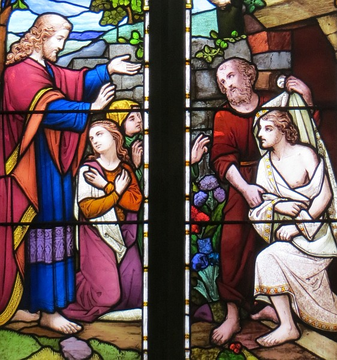

Lectuthes:
Nos deux lectuthes anièt sont bein à propos - j'sommes dans la saîson d'Pâques - et j'voulons continnuer à célébrer la résurrection dé Jésû-Christ et la vie êternelle tch'i' nos offre.
Si ous avez l'temps dé liéthe tout l'Êvangile dé St Jean, ous allez dêcouvri qué chaque chapitre nos montre eune partie du caractéthe ou dé l'oeuvre dé Jésû-Christ. Dans l'onzième chapitre j'lé rencontrons comme lé Prînce d'la Vie. LA VIE en lettres majuscules.
I' y' avait eune fais un janne prêtre tchi 'tait sus l'point dé condithe san preunmyi sèrvice d'entèrrement et i' dêcidit dé cherchi dans la Bibl'ye pouor vaie comment qué Jésû éthait condit un tel sèrvice. A sa surprînse i' dêcouvrit qué Jésû né prînt janmais part dans un entèrrement - i' n'tait pon lé Prînce d'la Mort mais tréjous lé Prînce d'la Vie.
Ch' tait li tchi dit, "J'sis v'nu à fîn qu'ous ayiz la vie, la vie abondante" et dans l'conte dé Lazare i' nos prend au d'là dé la vie ichîn-bas au rouoyaume dé l'êtèrnité et d'la vie au d'là d'la tombe.
Au centre même du chapitre dans l'vèrset 25 veinnent les mots triomphants "J'sis la résurrection et la vie". À chaque sèrvice d'entèrrement qué j'condis j'procliâme ches mots à haute et cliaithe vouaix. Ch'est chîn les mots tchi souôlîngnent la glorieuse victouaithe du jour dé Pâques. Ch'est chîn les mots tchi affirment et dêcliaithent qué la mort, not' drein ennemîn, a 'té vaîntchu. Ch'est chîn les mots du cri victorieux qué chaque croyant peut prononcer auve toute confidence.
"J'sis la résurrection et la vie; lé chein tchi crait en mé viv'tha même qu'il meuthe; et lé chein tchi vit et crait en mé né mouôrra janmais". "Crais-tu chenna?" i' d'mandit à Marthe. Touos vous ichîn ch't' arlévée, criyiz-ou chenna?
Au vèrset 17 Lazare avait 'té mort pour quat' jours. Lé nombre dé jours est împortant. Jésû arrivit à la fîn dé trais jours dé grand deu, et ch'tait dans chutte période qué l'âme sé s'pathait du corps dans autcheune possibilité d'èrtou, et bein seux dans chu clyînmat lé corps avait déjà c'menchi à dêcomposer. À vrai dithe, après trais jours, la mort avait plieine autorité. Ch'est en tchi, lé pus grand lé problème, lé pus grand lé mithacl'ye, lé pus grand lé renforchément d'la fouai dé Marthe et d'Mathie et des aut'es; lé pus grand lé renforchément dé not' fouai et, surtout, lé pus grand la glouaithe tchi va à not' Péthe Êtèrnel.
J'n'avons pas liu jusqu'au vèrset 44 mais j'connaissons tous la fîn du conte, et i' faut qué j'viyons dans la restaurâtion d'la vie à Lazare la promêsse dé Jésû-Christ tch'a l'pouver dé nos offri eune vie qué pèrsonne ou rein n'peuvent dêtruithe. Ch'est chîn lé haut point dé l'Êvangile après un èrmèrquabl'ye crescendo.
Ieau tchi fut changi en vîn nos montre la difféthence qué Jésû fait à la vie quand il est învité. Nicodème dêcouvre la nouvelle vie tchi existe quand eune pèrsonne est née eune deuxième fais. La Samaritaine au pits rencontre la fontaine d'ieau vivante tchi lî pass'tha la sé chaque jour dé sa vie. Pour lé janne garçon qu'est mouôthant, pour lé paralysé, pour l'aveugl'ye, ch'est Jésû tchi lus donne la vie abondante. Mais ch'est avec Lazare qué j'viyons l'ênorme proportion dé chein qué Jésû nos offre - la vie d'la résurrection, et ch'est la vie même dé Dgieu l'-même, dé Dgieu l'immortel. La mort dans la présence et la compangnie dé Jésû a perdu tout san pouver.
Marthe 'tait eune femme dé fouai. Ou savait bein qué Jésû 'tait dgéthisseux et ou savait bein qué si Jésû 'tait v'nu pus tôt, Lazare éthait 'té dgéthi. Et ou criyait étout dans eune résurrection dans tchique temps à l'av'nîn. mais chu jour-chîn ou s'en allait apprendre qué la vie d'la résurrection existe pour lé présent, pour anièt même. Et comme yi, j'pouvons joui d'la vie d'la résurrection dans un corps tchi vieillit chaque jour mais tch'est déjà doué d'la vie êtèrnelle.
Mais èrvénons à la tchestchion - criyiz-ou tous chenna? La vie d'la résurrection, est-alle partie dé vot' expéthience? Quand j'criyons vraiment et sincéthement en Jésû-Christ comme Sauveu et Seigneu, san Saint Esprit vint d'meuther en nous et sa vie d'vint not' vie. St. Paul êcrivit ès Colossiens et lus dit tch'il' "avaient déjà 'té résuscités auve Jésû-Christ". Et chutte résuscitâtion dépend compliètement sus not' crianche. Jé n'peux pas comprendre les gens quand i' m'disent qué ch'est nos bouonnes actions tchi ouvrent les portes du ciel. Ch'n'est pon chenna qué j'faîthons; ch'n'est pon même tchi qué j'sommes. I' y'en a tchi disent "mais j'sis britannique", mais not' nâtionalité n'est pon un passeport au Rouoyaume dé Dgieu. Êtant Jèrriais est la qualificâtion pour d'meuther dans not' p'tite île, mais êtant Jèrriais n'vaudra absolûment rein à l'entrée du paradis. I' s'peut qué j'liêthons not' Bibl'ye chaque jour, qué j'prions Dgieu matîn et sé, d'vant et après mangi; i' s'peut qué j'suivrons la louai qué Dgieu donnit à Moïse; i' s'peut qué j'sommes honorabl'yes et respectabl'yes, des gens comme i' faut....... mais ch'n'est pon là la m'suthe qué Dgieu prend'tha pour nos jugi.
La seule m'suthe s'sa "lé chein tchi crait en mé". Lé chein tchi crait en Jésû-Christ tchi seul est lé c'mîn, la véthité et la vie èrchèv'tha lé don d'la vie d'la résurrection. I' n'y' a pas d'dêtou; i' n'y' a pas un chouaix dé c'mîn. i' n'y' a pas bésoin dé complyitchi la procéduthe. I' n'faut pas même êprouver d'ajouôter à la condition ou même dînminnuer l'offre.
La rêponse dé Marthe 'tait bein simpl'ye "Oui, Seigneu, j'crai qué tu'es lé Christ, lé Fis dé Dgieu." Ch'est là la seule rêponse qué Jésû attend. Mais St. Jean nos dit qué tout d'suite Marthe fut crier sa soeu lî disant "Lé Maître est ichîn et i' d'mande pour té".
Vèthe, lé Sauveur du monde 'tait v'nu à Béthanie et i' d'mandait pour Mathie. Et ch'est d'même acouô au jour d'anièt. Lé même Jésû est là auve les bras ouvèrts invitant les gens dé s'appréchi d'li. I' tape à la porte dé lus vie auve l'opporteunité d'ouvri la la porte pour laissi lé Sauveur entrer. Mathie sé l'vit vit et s'en fut lé rencontrer.
Lé Sauveur du monde est v'nu à Jèrri. Il est ichîn auve la même invitâtion. Ch'est san grand d'si qué pèrsonne né péthisse. I' n'sé forche pas sus autchun mais il a tréjous bésoin dé vous et d'mé pour l'întroduithe ès cheins tchi n'craient pon en li. L'av'ous introduit à tchitchun dreinement? Combein dé vos pathents, vos anmîns, vos vaîsîns, vos collègues apprèchent chaque jour la fîn d'lus vie dans chu monde sans autcheune espéthance pour lus êtèrnité? Êtes-ou la melle dans la chaîne tchi les mèn'tha hors les ténèbres à la leunmiéthe, d'la mort à la vie d'la résurrection, pour n'être pus êtrangièrs mais pustôt citouoyens du Rouoyaume dé Dgieu?
Lé Rouai 'Douard lé Confesseur au pas d'la mort annoncit "Jé n'm'en vais pas mouôthi. Comme j'tchitte lé pays des mouothants j'vèrrai lé Bouon Dgieu dans l'pays des vivants".
"J'sis la résurrection et la vie; lé chein tchi vit et crait en mé viv'tha même qu'il meuthe; et lé chein tchi vit et crait en mé né mouôrra janmais." Criyiz-ou chenna? Si ou pouvez rêpondre auve la sincéthité dé Marthe, sortez d'ichîn, j'vos en prie, auve la confidence dé vivre la vie d'la résurrection pour lé restant dé vos jours sus la tèrre. Tous tchi craient en li sont remplyis auve l'esprit dé Jésû-Christ, vivant et résuscité. Lé pouver tchi ram'nit Jésû d'la tombe est lé même pouver tchi vos donne l'énergie et vos êtchippe pour être les êfants dé Dgieu; ch'est l'pouver tchi vos permet d'être lé sé et la leunmiéthe du monde; lé pouver tchi vos permet dé servi lé Dgieu Tout-Puissant chaque jour. Ou n'êtes pus morts dans vos péchés; ous êtes vivants auve Christ. Vèthe, allez-y - sortez d'ichîn pour vivre dans l'pouver d'la résurrection. Faites à saver à tous qué Jésû Christ n'est pas mort; il est résuscité et i' vit en vous. Alléluia! Amen!
Préchi par lé pasteur Brian Vibèrt dans l'Églyise d'la Ville, Dînmanche lé 18 d'Avri 1999
Viyiz étout: